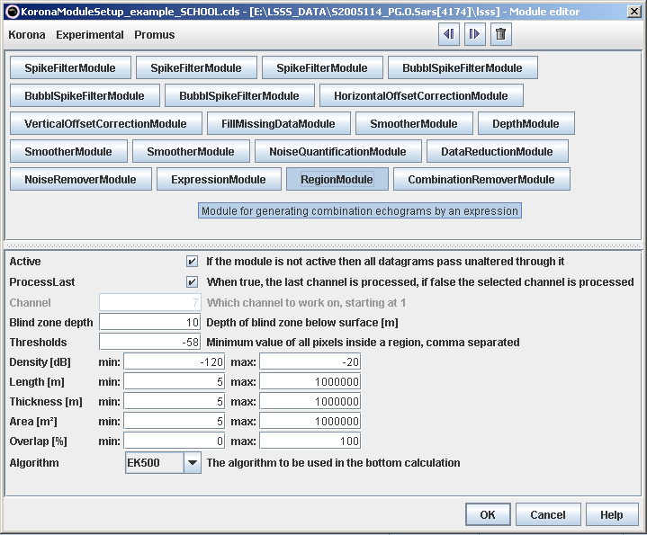
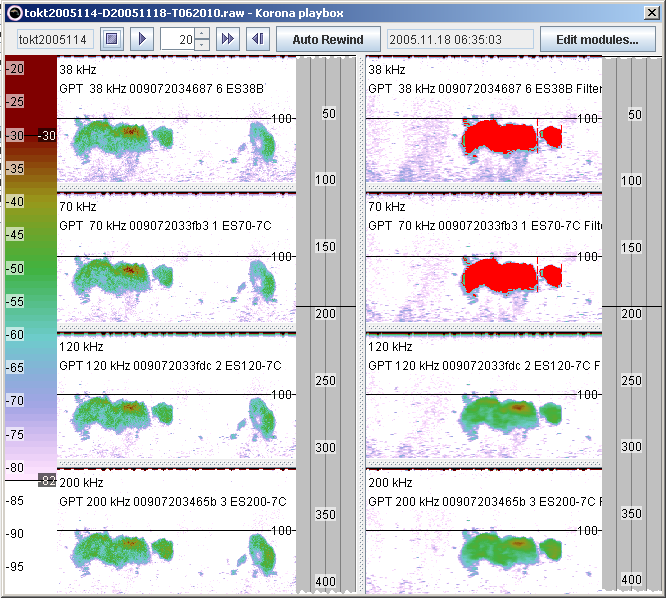

School detection is done by means of the School detection module, and is typically done on a combined-frequency channel after data improvement (see modules before School detection module, and Example 1) as shown in the figure below. Further, there is no need to keep the synthetic data-channel when the school is detected, so in the example that channel is removed. The School detection module adds a new data-telegram. The results of the school-detection are visualised in KORONA by setting "Show regions", and in LSSS by checking the "Preprocessed regions" from the "Overlay menu". The "Overlay menu" is started e.g. by clicking the right-mouse-button in the pelagic echogram and select "Configure pelagic echogram"

The figure below shows detected schools. The left panel shows the 4 frequencies 38, 70, 120 and 200 kHz, and the right panel shows the same frequencies preprocessed, and with the detected schools shown in the 18 and 38 kHz echogram.
